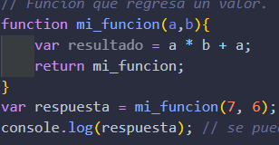
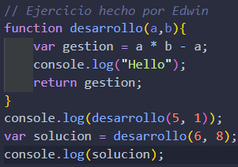
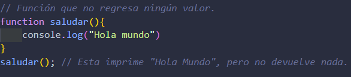

Este lenguaje se utiliza en toda la WEB y principalmente para manipular HTML y CSS
Las funciones son segementos de código que realizan una función específica. Las funciones pueden tener variables de entrada para cambaiar su comportamiento, y normalmente nos regresa un resultado al finalizar.
Para implementar funciones, utilizamos la palabra reservada function seguido de paréntesis en donde podemos tener variables de entrada (Parámetros o Argumentos) para que modifique el comportamiento de la función. Después se abren llaves las cuales contiene las líneas de código que se ejecutarán cuando se manda a llamar la función, ejemplo:
Para ejecutar una función debemos llamarla y podemos hacer ésto cuantas veces queramos. Es por esto que son útiles para reutilizar código. Ésto se hace muy fácilmente, escribimos el nombre de la función junto con sus parámetros que, en el caso anterior serían a y b. Si solo escribiéramos un parámetro en la llamada, JavaScript nos arrojaría un error de ejecución debido a que la función que estamos usando requiere 2 parámetros, ejemplo:
Como podemos ver, se crea una variable llamada repuesta y en esa variable se llama la función anterioemente creada y se asignan los valores integer 2 y 3. Después de ésto haces uso de una función de JavaScript llamda Console.log que nos muestra el parámetro en la consola.
Si una función no tiene return, su valor será undefined por defecto. Estas funciones se usan cuando quieres que realicen una tarea o acción específica, pero no necesitas que devuelvan nigún valor. Ejemplo:
